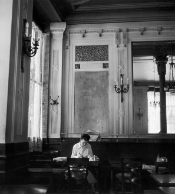
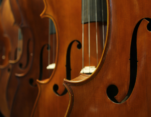
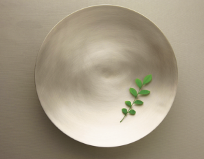
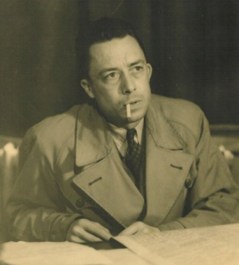
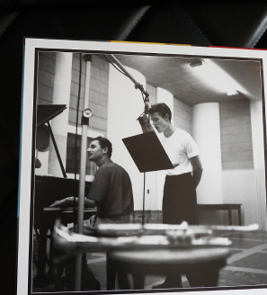

을유 포스트
-
[연애편지] 미리보기
#1. 보부아르가 넬슨 올그런에게 보낸 첫 번째 편지
1947년 2월 23일 토요일 저녁, 캘리포니아행 기차에서 친애하는 넬슨 올그런 씨.영어로 편지를 써 보도록 하겠어요. 그러니 저의 서툰 문법 실력을 용서해 주시고, 단어를 올바르게 사용하지 않더라도 이해해 주세요. 게다가 저의 글씨체는 워낙 알아보기가 힘들고, 더욱이 저는 달리는 기차 안에서 쓰고 있답니다. 당신과 헤어지고 나서 곧 호텔에서 기사 하나를 마쳤어요.
-
[현대 예술의 거장]
미국의 위대한 재즈 음악가 찰스 밍거스 : 소리와 분노
밍거스 안의 예술가는, 마치 도덕주의자처럼 전통에 대한 존중에 닻을 내리고 있었다. 그의 스승들은 헌신과 기교 연마의 중요성을 강조했다. 예술에는 질서와 규율이 필요했다. 구조가 없다면 단지 혼돈만이 말할 뿐이라고 그는 생각했다. 그는 파커보다 테이텀이 흥미로웠다. 물론 두 사람은 화성적인 아이디어가 겹치지만 테이텀은 클래식 음악에서부터 스트라이드 피아노에 이르는 기초에 훨씬 명백하게 뿌리를 내리고 있었다. 하지만 이미 밍거스에게 최고의 음악은 스타일들을 뒤섞은 것이기도 했다. 그의 복잡한 삶을 위한 새로운 표현 형식이 필요해 보였다. 그는 베토벤을 존경했는데 이 음악가는 고전적인 형식을 자기 확신을 향한 낭만주의적 열망에 맞게 확장해 나갔기 때문이다.
-
[컬트] 미리보기
#3. 데이비드 코레시와 다윗가지파
자기가 영광의 광휘 속에서 죽을 것이라고 예언했던 데이비드 코레시는 자신의 컬트 다윗가지파를 미국 연방 정부와의 처절한 대결로 몰아갔다. 언론 매체에 매일같이 보도되었던 이 사건에서 그의 추종자들로 이루어진 작은 무리는 텍사스주 웨이코의 자기네 거주 시설을 포위한 FBI와 무려 51일간이나 대치했다. 특히 1993년 4월 19일에 있었던 최종 충돌의 강렬함(다윗가지파 구성원 76명이 사망했는데, 그중 21명은 16세 이하였다) 때문에 ‘웨이코’는 극우 생존주의자 서클에서 유행어가 되었으며, 파국 대비자 집단은 만약 정부가 저 정도의 위력으로 자국 시민을 공격할 채비가 되어 있다면, 그런 공격을 버티거나 극복하기 위해 자기들은 더 많은 화력이 필요하다고 확신하게 되었다.
-
[윤광준의 생활명품 101]
#2. 은은한 기품을 먹는 즐거움, 현대적 디자인의 유기그릇
마음에 드는 생활용품을 사기 위해 눈에 띄는 가게를 찾는 일은 우리 부부의 즐거움이기도 하다. 한옥이 흔한 서촌 골목을 거니는 일은 재미있다. 유기그릇 ‘놋이NOSHI’를 만난 곳도 여기다. 한눈에 들어오는 독특한 디자인은 거무튀튀한 반점과 녹청을 뒤집어쓴 주발과 수저로 고정된 전통 유기의 선입견을 단숨에 부쉈다.유기의 질감과 색채, 무게감을 그대로 지닌 채 신선한 형태가 눈에 들어온다. 밥주발과 국그릇, 수저에 국한되지 않은 다채로운 용기의 파격도 아무렇지 않게 느껴졌다. 큼직한 원형 접시는 도톰한 두께만큼 움푹 팬 굴곡의 깊이가 균형감 있게 아름다웠다. 고운 사포로 밀어낸 듯한 부드러운 결이 느껴지는 유기의 광택은 은은하고 부드러웠다. 그릇의 형태와 질감이 어울려 풍기는 묵직한 느낌은 인스턴트 시대의 가벼움을 비웃는 듯했다.
-
[연애편지] 미리보기
#4. 앙드레 지드, 알베르 카뮈, 찰리 채플린
1948년 10월 18일 월요일 사흘 전에는 스카치를 마시러 니스로 내려갔다가 우연히 우체국 앞에서 늙은 앙드레 지드와 마주쳤어요. 그를 알아요? 작년에 노벨 문학상을 받은 프랑스 작가예요. 미국에서 그의 『일기』가 번역됐는데, 그 책은 미국인에게는 길고 지루할 거예요. 다수의 이해하기 어려운 프랑스인과 그들에 얽힌 일화 그리고 전적으로 프랑스적인 세부 사항들이 인용되어 그가 무엇을 이야기하는지 모를 것이기 때문이지요. 그는 예전에 프랑스 문학의 리더였고, 대단히 똑똑하며 때때로 재미나기도 했으며, 자유와 동성애를 위해 투쟁했어요. 지금은 매우 연로하고, 안경과 펠트 모자를 쓰고서 저를 웃게 하지요. 왜냐하면 무척 다정한 모습을 보이는 동시에 우리의 만남이 3분을 넘길까 노심초사하기 때문이에요. 그는 쉬 피곤해져요. 노년이에요.
-
[현대 예술의 거장]
쳇 베이커 : 그대 다시는 고향에 가지 못하리
오클라호마 예일시 출신의 스물세 살 된 트럼페터가 스타급의 음악인인가에 대한 우리의 의혹이 우려에 지나지 않았음을 이 LP를 통해 확인할 수 있다. 시종일관 이 청년은 그만의 스타일과 사운드, 그리고 악기에 대한 장악력을 드러냈다. 디지 길레스피나 마일스 데이비스, 조 뉴먼, 쇼티 로저스, 클라크 테리 같은 이름 옆에 손가락 하나를 더 꼽아 새로운 존재를 더해야 할 것이다. 쳇 베이커가 등장했다. 언제나 그랬지만, 쳇 베이커는 적은 수의 음정만으로도 많은 것을 표현할 줄 알았다. 1970년대 후반부터 그의 밴드에 합류했던 피아니스트 필 마코위츠는 이렇게 얘기했다. “모차르트의 곡을 예로 들어 볼까요? 단 하나의 음정만 빼면 멜로디 라인 전체가 무너져 버리죠. 쳇 베이커의 음악도 마찬가지였어요. 그가 벌이는 연주 속에는 간결함과 명료함이 함께 내포돼 있었죠.”
-
[을유세계문학전집]
130권. 아우구스트 스트린드베리, 『꿈의 연극』
입센과 더불어 북유럽을 대표하는 세계적인 극작가이자 스웨덴의 셰익스피어라고 불리는 아우구스트 스트린드베리는 끊임없이 새로운 형식을 추구했으며 인간의 비이성적 혹은 무의식적 요소를 연극에 도입함으로써 표현주의의 선구자로 평가받는다. 20세기 서구 드라마에 끼친 엄청난 영향력 때문에 ‘현대 연극의 아버지’라는 찬사도 받고 있으며 오늘날까지도 그의 작품은 전 세계에서 공연되고 있다. 특히 자연주의 희곡의 백미로 꼽히는 「미스 줄리」와 연출가라면 누구나 무대에 올리기를 꿈꾸는 작품이라고 평가받는 「꿈의 연극」은 그의 대표작 가운데 하나다.「미스 줄리」는 스웨덴의 전통적인 명절인 하지절 전야를 배경으로 귀족과 하인 간의 계급 투쟁을 묘사하면서 성립하기 어려운 애정 관계를 드러내는 작품이다. 주인공인 미스 줄리와 하인 장은 서로에게 점차 빠져드는데 극이 전개되는 동안 각자의 계급에 따라 금지된 에로티시즘을 강화시킨다.